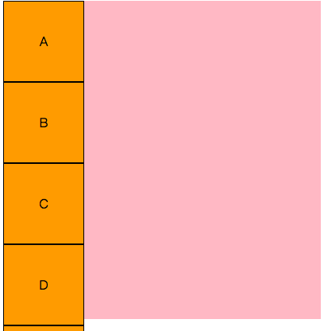
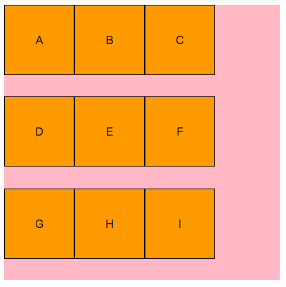
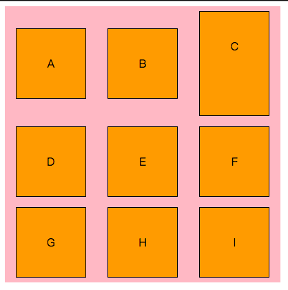

flex是个超好用的css 布局属性。
到2017-12 主要浏览器基本都支持了。如下：
flex 属性可应用于，flex容器，flex项目。其中flex容器中的元素，自动成为flex项目。
根据属性控制的轴的类型，简单总结下flex的各个属性，如下：
假设9个方块其html如下，基本css如下：
1 | <div class="container"> |
css
1 |
|
未加flex布局时的原始样式。

flex container
1 | .container { |
主轴方向相关的属性
[flex-direction] 规定项目排列方式，也就是主轴方向
- row：默认，沿主轴从左向右排列子元素。规定主轴为水平方向。
- row-reverse：从右向左
- column：规定主轴方向为垂直方向，从上到下排列子元素。
- column-reverse： 从下到上排列。
[flex-direction] 规定换行情况
- no-wrap： 默认，不换行。见上面第二张图
- wrap：换行。
- wrap-reverse： 换行，且第一行在下方。
如果规定了父元素宽度，默认不换行的话，其子元素会等比例缩小宽度（也就是子元素定义的宽不生效了）。如果换行，则按照子元素大小来显示。
[flex-flow] 以上两个的简写
- 主轴方向 + 换行
例子： flex-flow:row-reverse wrap-reverse;
[justify-content] 项目在主轴方向上的对齐方式。
- flex-start：默认，相对于主轴左对齐（要根据flex-direction规定的轴方向来说，以下相同，不赘述了）
- flex-end：右对齐
- center：居中
- space-between：两端对齐，项目之间间隔相同
- space-around：每个项目的两侧间隔相同，所以项目间的距离是项目与边框的距离的二倍
例子：flex-flow:row-reverse wrap-reverse;justify-content:flex-end;
如果换成center：justify-content:center;
如果换成space-between：justify-content:space-between;
交叉轴方向相关的属性
下面换个基础图，
1 | .container { |
如果我们设下：flex-flow:row wrap;
则有：

[align-items] 项目在交叉轴上的对齐方式
- flex-start： 交叉轴的起点对齐
- flex-end：交叉轴的终点对齐
- center：交叉轴的中点对齐
- baseline：项目的第一行文字的基线对齐
- stretch：默认，如果项目未设置高度或设为auto，将占满整个容器的高度。
行数比较多的时候，有些效果可能看不出来。
例子：将c div改一下高度：
1 | <div style="height:150px">C</div> |

如果：改成align-items: baseline;

[align-content] 主轴在交叉轴上的对齐方式
只有单行主轴的时候不生效。
与justify-content内容相同，多了个stretch，这个是默认值。
不过都是轴线相对于交叉轴的。比如：flex-start多根主轴在交叉轴的方向上，按交叉轴起点方向向下排列。
justify-content: space-around;align-content: space-around;
align-content: space-between;
flex item
每个flex项目也可以自定义一些属性。
[order] 定义项目的排列顺序。数值越小，排列越靠前，默认为0
例子，假如我们把上面的Fdiv的order改一下：<div style="order:2">F</div>
[flex-grow] 项目的放大比例。默认为0。如果为1，就是都占据同样的空间。其他的数字，则是如果有空余空间，则按照比例分配空间。
[flex-shrink] 项目的缩小比例。如果空间不够，将项目按照比例缩小。数字越大，缩小比例越大。
例子：
1
2
3
4
5<div style="order:2;flex-shrink: 0">F</div>
.container {
flex-flow: row nowrap;
}
<div style="order:2;flex-shrink: 2">F</div>
[flex-basis] 项目占据的主轴空间。可以设为百分比。
默认：0 1 auto；
快捷：auto（1 1 auto）
flex属性：[<’flex-grow’> <’flex-shrink’>? || <’flex-basis’>]
换新的布局：
1 | .container { |
如果c设置上flex <div style="height:150px;flex: 2 1 30%">C</div>
[align-self]
属性允许单个项目有与其他项目不一样的对齐方式，可覆盖align-items属性。默认继承父元素的align-items属性。其他属性与上面相同。<div style="align-self:flex-end">F</div>